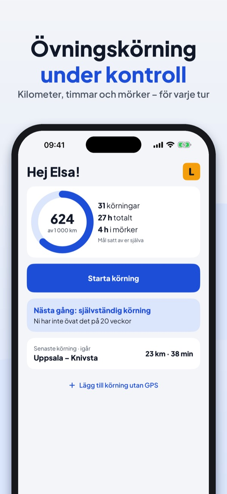
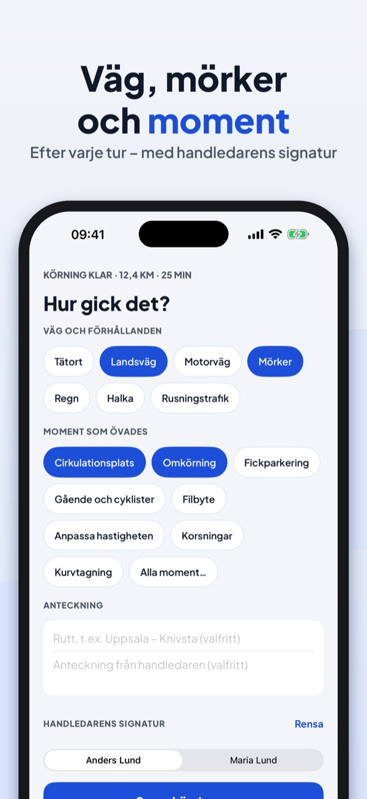
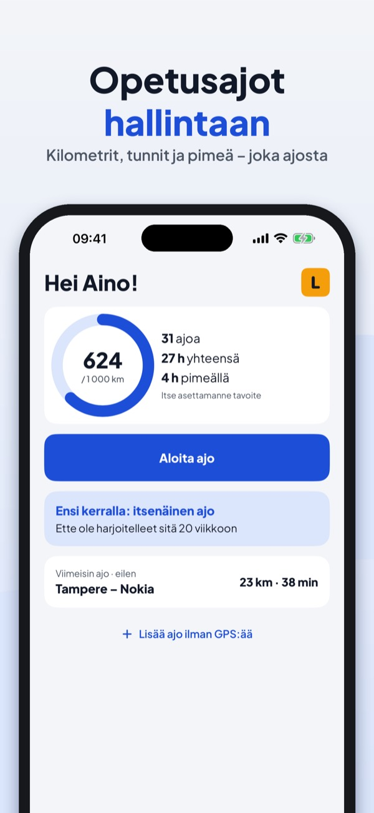
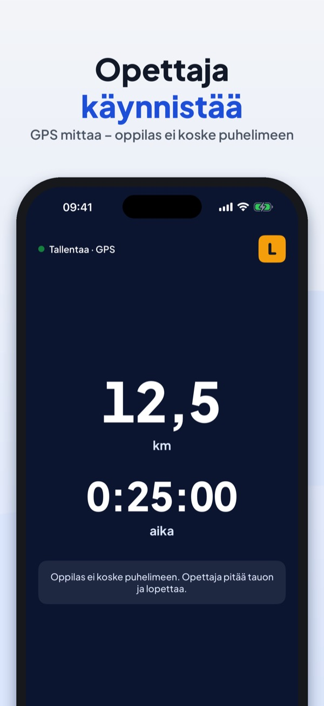
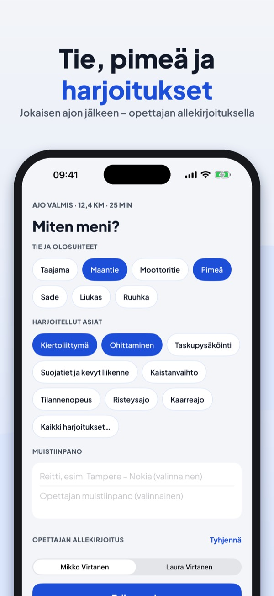
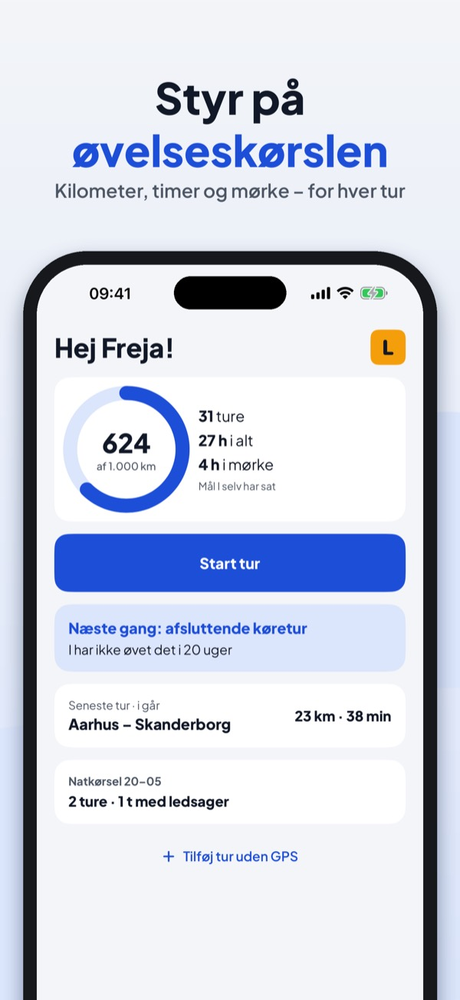
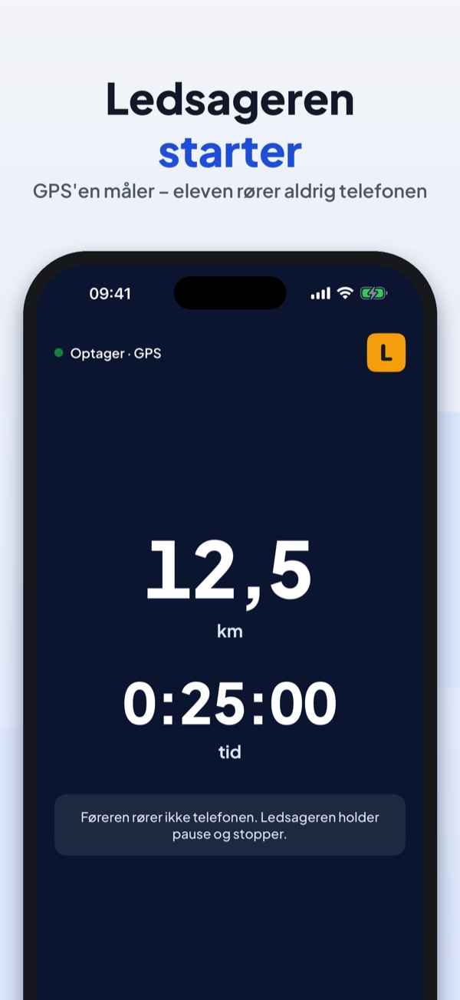
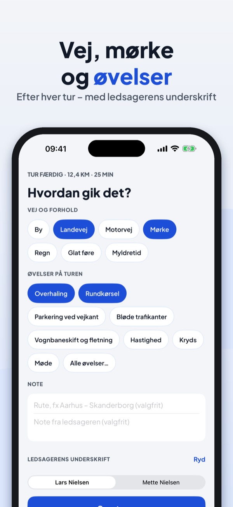
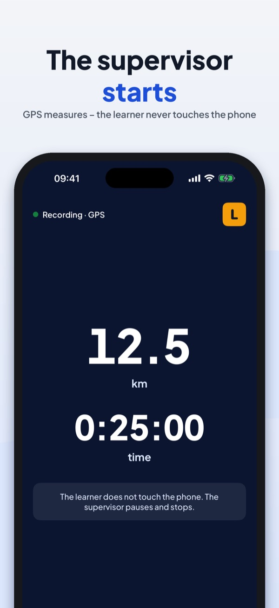
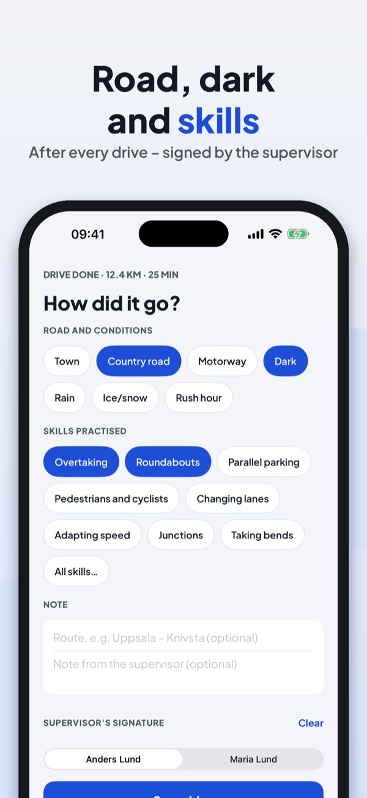

Logga km, tid och moment
Handledaren startar, GPS:en mäter. Efter turen väljer ni väg, förhållanden och moment – och ser vad ni ska öva nästa gång. Allt stannar på din iPhone.


Loggboken för övningskörning med handledare – i Sverige, Finland och Danmark.
Handledaren startar inspelningen, iPhonens GPS mäter sträcka och tid. Efter turen väljer ni vägtyp, förhållanden och de moment ni övade, och handledaren signerar på skärmen. Så vet ni alltid hur långt ni har kommit och vad som återstår inför uppkörningen.
Inspelning, turer, totaler, momentlistan, checklistan och en handledare fungerar utan köp. Ett engångsköp (Körbok Full) låser upp PDF-export, två handledare med signatur, förslagen om vad ni ska öva, statistik för mörker, motorväg och tätort och planen inför uppkörningen. Inget abonnemang, ingen reklam.
Turerna och positionerna stannar på din iPhone. Platsen används bara medan en tur spelas in. Appen skickar anonym användningsstatistik via Google Analytics for Firebase (t.ex. vilka skärmar och knappar som används, köp i appen och ungefärligt land) – aldrig position eller rutter. Det kan stängas av i Inställningar.
Körbok är en privat övningslogg, inget officiellt dokument, och har ingen koppling till Transportstyrelsen, Trafikverket, Traficom eller Færdselsstyrelsen. Använd inte telefonen under körning.
Terms of Use (EULA): https://www.apple.com/legal/internet-services/itunes/dev/stdeula/
Privacy: https://baytechbv.github.io/privacy/ovningskorning-nordic/
Kirjaa ajot ja harjoitukset
Opettaja käynnistää, GPS mittaa. Ajon jälkeen valitsette tien, olosuhteet ja harjoitukset – ja näette, mitä harjoitella seuraavaksi. Kaikki pysyy iPhonessasi.



Ajopäiväkirja opetusluvalla ajamiseen – Suomessa, Ruotsissa ja Tanskassa.
Opettaja käynnistää tallennuksen, iPhonen GPS mittaa matkan ja ajan. Ajon jälkeen valitsette tietyypin, olosuhteet ja harjoitellut asiat, ja opettaja allekirjoittaa näytölle. Näin tiedätte aina, kuinka pitkällä olette ja mitä on vielä jäljellä ennen ajokoetta.
Tallennus, ajot, yhteenvedot, harjoituslista, tarkistuslista ja yksi opettaja toimivat ilman ostoa. Kertaosto (Opetusajo Full) avaa PDF-viennin, kaksi opettajaa allekirjoituksella, ehdotukset seuraavaan ajoon, tilastot pimeästä, moottoritiestä ja taajamasta sekä suunnitelman ennen ajokoetta. Ei tilausta, ei mainoksia.
Ajot ja sijainnit pysyvät iPhonessasi. Sijaintia käytetään vain, kun ajoa tallennetaan. Sovellus lähettää nimetöntä käyttötilastoa Google Analytics for Firebasen kautta (esim. käytetyt näkymät ja painikkeet, sovelluksen sisäiset ostot ja likimääräinen maa) – ei koskaan sijaintia tai reittejä. Sen voi kytkeä pois asetuksista.
Opetusajo on yksityinen harjoituspäiväkirja, ei virallinen asiakirja, eikä sillä ole yhteyttä Traficomiin, Transportstyrelseniin tai Færdselsstyrelseniin. Älä käytä puhelinta ajon aikana.
Terms of Use (EULA): https://www.apple.com/legal/internet-services/itunes/dev/stdeula/
Privacy: https://baytechbv.github.io/privacy/ovningskorning-nordic/
Log ture, timer og øvelser
Ledsageren starter, GPS'en måler. Efter turen vælger I vej, forhold og øvelser – og ser, hvad I skal øve næste gang. Alt bliver på din iPhone.



Køreloggen til øvelseskørsel og ledsaget kørsel – i Danmark, Sverige og Finland.
Ledsageren starter optagelsen, iPhonens GPS måler afstand og tid. Efter turen vælger I vejtype, forhold og de øvelser, I har trænet, og ledsageren skriver under på skærmen. Så ved I altid, hvor langt I er nået.
Optagelse, ture, totaler, øvelseslisten, tjeklisten og én ledsager virker uden køb. Et engangskøb (Øvelseskørsel Full) låser op for PDF-eksport, to ledsagere med underskrift, forslag til næste tur, statistik for mørke, motorvej og by og planen før køreprøven. Intet abonnement, ingen reklamer.
Turene og placeringerne bliver på din iPhone. Placeringen bruges kun, mens en tur optages. Appen sender anonym brugsstatistik via Google Analytics for Firebase (fx hvilke skærme og knapper der bruges, køb i appen og omtrentligt land) – aldrig placering eller ruter. Det kan slås fra i Indstillinger.
Øvelseskørsel er en privat kørelog, ikke et officielt dokument, og har ingen forbindelse til Færdselsstyrelsen, Transportstyrelsen eller Traficom. Brug ikke telefonen under kørslen.
Terms of Use (EULA): https://www.apple.com/legal/internet-services/itunes/dev/stdeula/
Privacy: https://baytechbv.github.io/privacy/ovningskorning-nordic/
Log km, hours and skills
The supervisor starts, GPS measures. After the drive you pick road, conditions and skills – and see what to practise next. Everything stays on your iPhone.


The logbook for private practice driving with a supervisor – in Sweden, Finland and Denmark.
The supervisor starts the recording, the iPhone's GPS measures distance and time. After the drive you choose the road type, conditions and the skills you practised, and the supervisor signs on the screen. So you always know how far you have come and what is left before the driving test.
Recording, trips, totals, the skills list, the checklist and one supervisor work without a purchase. One purchase (Körbok Full) unlocks PDF export, two supervisors with signature, the "what next" suggestions, statistics for dark, motorway and town, and the plan before the test. No subscription, no ads.
Trips and locations stay on your iPhone. Location is used only while a drive is being recorded. The app sends anonymous usage statistics through Google Analytics for Firebase (e.g. which screens and buttons are used, in-app purchases and the approximate country) – never location or routes. You can switch this off in Settings.
Körbok is a private practice log, not an official document, and is not affiliated with Transportstyrelsen, Trafikverket, Traficom or Færdselsstyrelsen. Do not use the phone while driving.
Terms of Use (EULA): https://www.apple.com/legal/internet-services/itunes/dev/stdeula/
Privacy: https://baytechbv.github.io/privacy/ovningskorning-nordic/